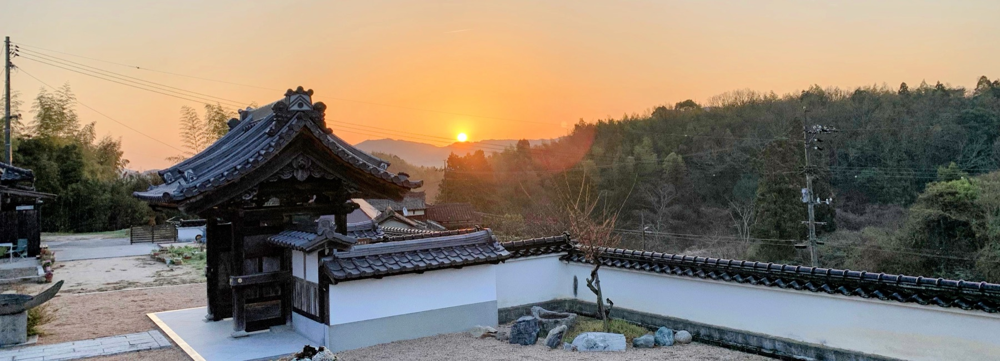
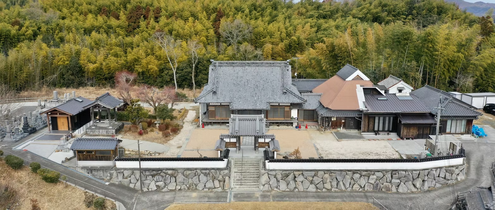
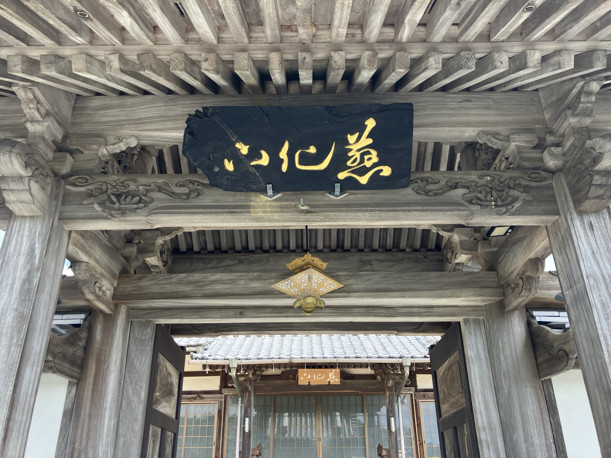

浄土真宗本願寺派
慈化山西円寺
これまでも これからも あなたとともにいつまでも
田舎の静かな時間の流れと共にある
浄土真宗本願寺派のお寺です
浄土真宗本願寺派のお寺です
「慈化山 西円寺（じけざん さいえんじ）」は、山口県田布施町の静かな時間の流れと共にある、浄土真宗本願寺派のお寺です。

西円寺の朝は、梵鐘の音で一日が始まります。日曜日にはご法事が務まり、お参りされる方を四季折々の季節の花々がお迎えします。法事やお参りを通して「いま自分がここにあること」を確認し、先人に学び、未来へ何を残していくかを確かめることができる温かい場であり続けたいと願っております。
法要儀式、各種仏事のご相談をはじめ、お仏壇やお墓の維持、納骨堂・合同墓のご使用など、どうぞお気軽にお問い合わせください。
西円寺では、ご門徒の皆さまやご縁のある方へ「西円寺からのお知らせ」をお届けする公式LINEを開設いたしました。
離れて暮らすご家族への情報共有、メールの見逃し防止を目的に運用しております。郵便料金の値上げも要因のひとつです。当面は年4回のお知らせ配信と相互連絡を中心に活用してまいります。ぜひ「友だち追加」をご登録ください。

開基・釋了円が本願寺第13代・良如上人に帰依して開基する
寺号「西円寺」の公称が本願寺第14代寂如上人に認許され、ご本尊をお迎え安置する
本堂を再々建立（現在の本堂）
本堂の屋根を茅から瓦に葺き替える
鐘楼を再建立
山門屋根瓦の修復および袖塀の新設・階段の架け替え
東屋を建立し、東面に備品庫を付設。北面に旧山門の獅子口瓦を設置
